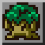
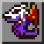
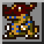
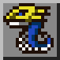
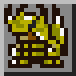
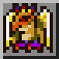

訓練／數碼蛋／性格
訓練加成倍率
訓練所得＝基本值 × 各項倍率相乘（先捨去小數），再乘道具倍率（再捨去小數）。能力上限 999。
| 因素 | 效果 | 適用 |
|---|---|---|
| 性格（訓練類型） | 見下面「性格」表：±10%；汙穢型 −20%（悟空獸除外） | 全部訓練場 |
| 階段 | 幼年期 −10%、成長期 ±0、成熟期 +10%、完全體 +20% | 全部 |
| 訓練手冊 | 帶喺身 +10%（妖精獸賣 50,000 點數） | 全部 |
| 古加獸 入城 | MP、攻擊、智力 +20% | 綠色健身室、祖利獸 |
| 比多獸 入城 | HP、防禦、速度 +20% | 綠色健身室、祖利獸 |
| 幼年期升級 | 用幼年期喺綠色健身室練夠 10 次後 +20% | 綠色健身室、祖利獸 |
📎 參考：SydMontague & Ginoshie – Digimon World 機制文件（Google Docs）
訓練場一覽（每次訓練）
| 訓練場 | 位置 | 項目 | 主增幅 | 副增幅 | 疲勞 |
|---|---|---|---|---|---|
| 綠色健身室 | 起始之城南面 | 攻擊 | 攻擊 +8 | 速度 +2 | +9 |
| 速度 | 速度 +8 | HP +10 | +8 | ||
| HP | HP +80 | 攻擊 +2 | +10 | ||
| 防禦 | 防禦 +8 | 智力 +2 | +9 | ||
| MP | MP +80 | 防禦 +2 | +7 | ||
| 智力 | 智力 +8 | MP +10 | +6 | ||
| 龍眼湖搭海龍獸去 | HP | HP +120 | — | +10 | |
| 攻擊 | 攻擊 +12 | — | +9 | ||
| 防禦 | 防禦 +12 | — | +9 | ||
| 速度 | 速度 +12 | — | +8 | ||
| 冰結凍土 → 寒霜聖殿 | 防禦 | 防禦 +12 | 速度 +2 | +9 | |
| HP | HP +120 | 防禦 +2 | +10 | ||
| ⚠️ 位置未核實（招募獅子獸後開放） | 攻擊 | 攻擊 +8 | HP +10 | +9 | |
| 速度 | 速度 +8 | HP +10 | +8 | ||
| 經齒輪莽原 | MP | MP +150 | — | +7 | |
 祖利獸 | 朦朧群樹 | 智力 | 智力 +8 | MP +10 | +6 |
- 疲勞數值係「每個鐘訓練」：HP 10、MP 7、攻擊 9、防禦 9、速度 8、智力 6；戰鬥 +5（MP 啱啱用到 0 再 +10，逃走 +2）。
- 疲勞 80 或以上會出汗：每次訓練 −4 快樂、−3 紀律；疲勞 100 時每項只加 1 點。
- 減疲勞：人馬獸診所每個鐘 −20、公公獸屋企布尼獸張櫈每個鐘 −10、甲蟲島古加獸每個鐘 −5；極品肉 −5、櫻桃樹果 −20、薺薺菜 −50、試手氣香菇 −30、鎖鏈蜜瓜 −50；餐廳每餐 −5（雪人獸 −2）。
📎 參考：SydMontague & Ginoshie – Digimon World 機制文件（Google Docs）
加成挑戰（老虎機）
| 結果 | 倍率 |
|---|---|
| 輸 | ×0.5 |
| 三個相同（唔係訓練項目圖案） | ×2 |
| 三個相同（＝訓練項目圖案） | ×4 |
| 金便便 | ×10 |
開始時遊戲會先決定：50% 一定輸、40% 可以贏（金便便除外，判定比較寬鬆）、10% 可以中金便便。結果一律捨去小數。
📎 參考：SydMontague & Ginoshie – Digimon World 機制文件（Google Docs）
食物（包括增益食物）
⚠️ 來源衝突：巴哈姆特寫數碼松果係全部能力 ×1.2；機制文件同資料表寫 ×1.5（本站跟後者）。
| 食物 | 飽肚 | 體重 | 疲勞／快樂／紀律／壽命／病 | 加能力 | 回復 | 訓練加成 |
|---|---|---|---|---|---|---|
Meat | 12 | 1 | ||||
Giant Meat | 24 | 2 | ||||
Sirloin | 35 | 3 | 疲勞-5 快樂+3 | |||
Super Carrot | 10 | -2 | 訓練加成 ×1.2（MP／攻擊／智力） | |||
Hawk Raddish | 15 | 3 | 訓練加成 ×1.2（HP／防禦／速度） | |||
Spiny Green | 9 | 1 | 疲勞-50 | |||
Digimushroom | 12 | 1 | ||||
Icemushroom | 19 | 2 | 紀律+50 | |||
Deluxemushroom | 38 | 4 | HP+100 MP+100 攻+10 防+10 速+10 智+10 | |||
Digipine | 22 | 2 | 訓練加成 ×1.5（全部） | |||
Blue Apple | 30 | 3 | 快樂+50 | |||
Red Berry | 25 | 2 | 疲勞-20 快樂+20 紀律+20 | |||
Gold Acorn | 40 | 4 | ||||
Big Berry | 100 | 10 | ||||
Sweet Nut | 20 | 2 | 回HP+9999 | |||
Super Veggy | 16 | 2 | 回MP+9999 | |||
Prickly Pear | 33 | -5 | ||||
Orange Banana | 24 | 2 | 回HP+1000 回MP+1000 | |||
Power Fruit | 20 | 2 | 攻+20 | |||
Power Ice | 20 | 2 | 防+20 | |||
Speed Leaf | 20 | 2 | 速+20 | |||
Sage Fruit | 20 | 2 | 智+20 | |||
Muscle Yam | 20 | 2 | HP+200 | |||
Calm Berry | 20 | 2 | MP+200 | |||
Digianchovy | 8 | 1 | ||||
Digisnapper | 12 | 1 | ||||
DigiTrout | 22 | 2 | ||||
Black Trout | 27 | -2 | HP+10 MP+10 攻+1 防+1 速+1 智+1 | |||
Digicatfish | 49 | 5 | ||||
Digiseabass | 35 | 4 | 壽命+3 病+0 | 回HP+9999 回MP+9999 | ||
Moldy Meat | 30 | 2 | 病+1 | |||
Happymushroom | 15 | 1 | 疲勞-30 快樂+30 病+0 | |||
Chain Melon | 50 | 3 | 疲勞-50 快樂+50 壽命+20 病+0 | |||
Rain Plant | 回MP+1000 | |||||
Steak | 32 | 病+0 | 回HP+1000 |
📎 參考：SydMontague – Digimon World 資料表（Google Sheets） ｜ SydMontague & Ginoshie – Digimon World 機制文件（Google Docs） ｜ 巴哈姆特 – 數碼寶貝大冒險 攻略（振興流程、道具一覽、中文版譯名）
睡眠時間表（作息類型）
| 類型 | 想瞓 | 起身 |
|---|---|---|
| 早起型 sunup | 16:00 | 1:00 |
| 日間型 day | 19:00 | 4:00 |
| 遲起型 groggy | 22:00 | 7:00 |
| 貪瞓型 sleepy | 2:00 | 11:00 |
| 日落型 sunset | 7:00 | 16:00 |
| 夜貓型 night | 10:00 | 19:00 |
| 幼年期Ⅰ | 醒 3 個鐘、瞓 1 個鐘 | |
| 幼年期Ⅱ | 醒 7 個鐘、瞓 3 個鐘 |
瞓幾耐都好，進化計時都加一樣嘅鐘數。過咗起身時間都未瞓完＝照顧失誤。
📎 參考：SydMontague & Ginoshie – Digimon World 機制文件（Google Docs）
數碼蛋 & 幼年期
新拍檔由幼年期Ⅰ開始，6 個鐘後變幼年期Ⅱ，再過 24 個鐘變成長期。幼年期Ⅱ變邊隻成長期，主要睇當時最高嘅能力（HP、MP 當 ÷10 比較）—— 詳見 進化規則。
| 幼年期Ⅰ | 蛋顏色 | 基本能力 | 幼年期Ⅱ | 可以變嘅成長期 | |
|---|---|---|---|---|---|
| 黑球獸 Botamon | 綠色 | 90 / 110 / 10 / 11 / 9 / 10 | 滾球獸 Koromon | ||
| 布尼獸 Punimon | 水藍色 | 120 / 100 / 16 / 8 / 8 / 6 | 獨角獸 Tsunomon | ||
| 浮游獸 Poyomon | 黃色 | 100 / 140 / 12 / 6 / 6 / 8 | 迪哥獸 Tokomon | ||
| 浮球獸 Yuramon | 粉紅色 | 100 / 120 / 8 / 8 / 8 / 8 | 種子獸 Tanemon |
幼年期Ⅱ → 成長期（最高能力判斷）
| 幼年期Ⅱ | 最高能力 → 成長期 |
|---|---|
| 滾球獸 Koromon | 攻擊→亞古獸；防禦／速度→加布獸 |
| 獨角獸 Tsunomon | 攻擊／速度→艾力獸；防禦／智力→企鵝獸 |
| 迪哥獸 Tokomon | 攻擊／智力→巴達獸；防禦／速度→比丘獸 |
| 種子獸 Tanemon | 速度／智力→巴魯獸；防禦→比特獸（種子獸程式錯誤：攻擊最高而體重唔喺 10–20 就唔會進化） |
任何幼年期Ⅱ喺堅定森林嘅毛蟲獸床瞓覺，醒嗰陣有 50% 變毛蟲獸。
轉生 & 馴獸師等級
- 壽終（大約 360 個鐘，完全體再加 96 個鐘）會變返蛋，可以喺 4 隻幼年期Ⅰ之中揀一隻 ⚠️（玩家 FAQ 講法）。新拍檔會繼承上一代「馴獸師等級 %」嘅能力，並保留已學技能。
- 三條命用完死亡：唔記得嘅技能數＝((10 − 馴獸師等級) × 2 × 技能數) ÷ 100（四捨五入，計之前先扣 1 級）。
- 升級機會：攞到「通關」「城鎮繁榮」「數碼暴龍大師」獎牌；自然進化到完全體；自然進化到成熟期有 20%；贏 B／A／S 級杯分別 10%／20%／30%；過年時快樂度 100 有 5%。
- 降級機會：三條命用完；食惡魔晶片Ａ系列 10%；參加太低級嘅比賽 30%；屙喺地下 1%；冇瞓覺 1%；過年時快樂度係負數 10%。
📎 參考：SydMontague & Ginoshie – Digimon World 機制文件（Google Docs） ｜ ガメモン – デジモンワールド 進化條件（蛋顏色） ｜ Neve – Digimon World 攻略 FAQ（VGM PDF 鏡像）
性格（訓練類型）、作息、喜愛食物
遊戲入面冇顯示「性格」，但係每隻數碼暴龍都有固定嘅訓練偏好，影響訓練增幅。
| 數碼暴龍 | 階段 | 類型 | 訓練效果 | 作息（想瞓→起身） | 喜愛食物 | 預設體重 | 專長 第1／2／3 |
|---|---|---|---|---|---|---|---|
| 黑球獸 Botamon | 幼年期Ⅰ | 均衡型 | 冇加減 | 幼年期Ⅰ（醒 3 個鐘、瞓 1 個鐘） | — | 5g | 火炎／-／- |
| 浮游獸 Poyomon | 幼年期Ⅰ | 攻速型 | 攻擊／速度 +10%，MP／智力 −10% | 幼年期Ⅰ（醒 3 個鐘、瞓 1 個鐘） | — | 5g | 大氣／-／- |
| 布尼獸 Punimon | 幼年期Ⅰ | 體防型 | HP／防禦 +10%，攻擊／速度 −10% | 幼年期Ⅰ（醒 3 個鐘、瞓 1 個鐘） | — | 5g | 大氣／-／- |
| 浮球獸 Yuramon | 幼年期Ⅰ | 智力型 | MP／智力 +10%，HP／防禦 −10% | 幼年期Ⅰ（醒 3 個鐘、瞓 1 個鐘） | — | 5g | 自然／-／- |
| 滾球獸 Koromon | 幼年期Ⅱ | 均衡型 | 冇加減 | 幼年期Ⅱ（醒 7 個鐘、瞓 3 個鐘） | — | 10g | 火炎／格鬥／- |
| 種子獸 Tanemon | 幼年期Ⅱ | 智力型 | MP／智力 +10%，HP／防禦 −10% | 幼年期Ⅱ（醒 7 個鐘、瞓 3 個鐘） | — | 10g | 自然／水冰／- |
| 迪哥獸 Tokomon | 幼年期Ⅱ | 攻速型 | 攻擊／速度 +10%，MP／智力 −10% | 幼年期Ⅱ（醒 7 個鐘、瞓 3 個鐘） | — | 10g | 大氣／格鬥／- |
| 獨角獸 Tsunomon | 幼年期Ⅱ | 體防型 | HP／防禦 +10%，攻擊／速度 −10% | 幼年期Ⅱ（醒 7 個鐘、瞓 3 個鐘） | — | 10g | 大氣／水冰／- |
Agumon | 成長期 | 均衡型 | 冇加減 | 日間型（19:00→4:00） | 15g | 火炎／-／格鬥 | |
Betamon | 成長期 | 體防型 | HP／防禦 +10%，攻擊／速度 −10% | 遲起型（22:00→7:00） | 15g | 水冰／-／大氣 | |
Biyomon | 成長期 | 智力型 | MP／智力 +10%，HP／防禦 −10% | 日間型（19:00→4:00） | 15g | 大氣／-／火炎 | |
Elecmon | 成長期 | 攻速型 | 攻擊／速度 +10%，MP／智力 −10% | 日間型（19:00→4:00） | 15g | 大氣／-／格鬥 | |
Gabumon | 成長期 | 體防型 | HP／防禦 +10%，攻擊／速度 −10% | 遲起型（22:00→7:00） | 15g | 格鬥／-／火炎 | |
Kunemon | 成長期 | 攻速型 | 攻擊／速度 +10%，MP／智力 −10% | 日落型（7:00→16:00） | 15g | 自然／-／大氣 | |
Palmon | 成長期 | 智力型 | MP／智力 +10%，HP／防禦 −10% | 早起型（16:00→1:00） | 15g | 自然／-／水冰 | |
Patamon | 成長期 | 均衡型 | 冇加減 | 日間型（19:00→4:00） | 15g | 格鬥／-／大氣 | |
Penguinmon | 成長期 | 均衡型 | 冇加減 | 日間型（19:00→4:00） | 15g | 水冰／-／自然 | |
 飛龍獸Airdramon | 成熟期 | 智力型 | MP／智力 +10%，HP／防禦 −10% | 日間型（19:00→4:00） | 30g | 大氣／火炎／- | |
Angemon | 成熟期 | 智力型 | MP／智力 +10%，HP／防禦 −10% | 日間型（19:00→4:00） | 20g | 大氣／-／格鬥 | |
Bakemon | 成熟期 | 智力型 | MP／智力 +10%，HP／防禦 −10% | 日落型（7:00→16:00） | 20g | 大氣／-／水冰 | |
Birdramon | 成熟期 | 攻速型 | 攻擊／速度 +10%，MP／智力 −10% | 日間型（19:00→4:00） | 20g | 火炎／大氣／- | |
Centarumon | 成熟期 | 智力型 | MP／智力 +10%，HP／防禦 −10% | 日間型（19:00→4:00） | 30g | 火炎／格鬥／- | |
Coelamon | 成熟期 | 攻速型 | 攻擊／速度 +10%，MP／智力 −10% | 貪瞓型（2:00→11:00） | 30g | 水冰／-／自然 | |
Devimon | 成熟期 | 均衡型 | 冇加減 | 日落型（7:00→16:00） | 20g | 格鬥／大氣／水冰 | |
Drimogemon | 成熟期 | 攻速型 | 攻擊／速度 +10%，MP／智力 −10% | 日落型（7:00→16:00） | 40g | 格鬥／-／自然 | |
Frigimon | 成熟期 | 智力型 | MP／智力 +10%，HP／防禦 −10% | 貪瞓型（2:00→11:00） | 30g | 水冰／-／格鬥 | |
Garurumon | 成熟期 | 均衡型 | 冇加減 | 日間型（19:00→4:00） | 30g | 水冰／火炎／格鬥 | |
 暴龍獸Greymon | 成熟期 | 均衡型 | 冇加減 | 日間型（19:00→4:00） | 30g | 火炎／格鬥／大氣 | |
Kabuterimon | 成熟期 | 攻速型 | 攻擊／速度 +10%，MP／智力 −10% | 夜貓型（10:00→19:00） | 30g | 自然／火炎／大氣 | |
Kokatorimon | 成熟期 | 體防型 | HP／防禦 +10%，攻擊／速度 −10% | 早起型（16:00→1:00） | 30g | 大氣／-／格鬥 | |
Kuwagamon | 成熟期 | 體防型 | HP／防禦 +10%，攻擊／速度 −10% | 日落型（7:00→16:00） | 30g | 自然／格鬥／大氣 | |
Leomon | 成熟期 | 均衡型 | 冇加減 | 日間型（19:00→4:00） | 20g | 格鬥／-／大氣 | |
Meramon | 成熟期 | 攻速型 | 攻擊／速度 +10%，MP／智力 −10% | 日落型（7:00→16:00） | 20g | 火炎／-／格鬥 | |
Mojyamon | 成熟期 | 均衡型 | 冇加減 | 早起型（16:00→1:00） | 20g | 水冰／格鬥／自然 | |
Monochromon | 成熟期 | 體防型 | HP／防禦 +10%，攻擊／速度 −10% | 日間型（19:00→4:00） | 40g | 火炎／格鬥／自然 | |
Nanimon | 成熟期 | 汙穢型 | 全部 −20% | 貪瞓型（2:00→11:00） | 20g | 汙穢／格鬥／- | |
| 伊賀獸 Ninjamon | 成熟期 | 攻速型 | 攻擊／速度 +10%，MP／智力 −10% | 早起型（16:00→1:00） | 10g | 自然／格鬥／火炎 | |
Numemon | 成熟期 | 汙穢型 | 全部 −20% | 遲起型（22:00→7:00） | 20g | 汙穢／-／- | |
| 奧加獸 Ogremon | 成熟期 | 攻速型 | 攻擊／速度 +10%，MP／智力 −10% | 貪瞓型（2:00→11:00） | 30g | 格鬥／火炎／自然 | |
 海龍獸Seadramon | 成熟期 | 體防型 | HP／防禦 +10%，攻擊／速度 −10% | 遲起型（22:00→7:00） | 30g | 水冰／自然／火炎 | |
Shellmon | 成熟期 | 體防型 | HP／防禦 +10%，攻擊／速度 −10% | 遲起型（22:00→7:00） | 40g | 水冰／-／大氣 | |
Sukamon | 成熟期 | 汙穢型 | 全部 −20% | 日間型（19:00→4:00） | 30g | 汙穢／-／- | |
Tyrannomon | 成熟期 | 均衡型 | 冇加減 | 貪瞓型（2:00→11:00） | 30g | 格鬥／-／火炎 | |
Unimon | 成熟期 | 均衡型 | 冇加減 | 日間型（19:00→4:00） | 30g | 大氣／格鬥／- | |
Vegiemon | 成熟期 | 智力型 | MP／智力 +10%，HP／防禦 −10% | 早起型（16:00→1:00） | 10g | 自然／-／水冰 | |
Whamon | 成熟期 | 體防型 | HP／防禦 +10%，攻擊／速度 −10% | 日間型（19:00→4:00） | 40g | 水冰／-／自然 | |
Andromon | 完全體 | 智力型 | MP／智力 +10%，HP／防禦 −10% | 日間型（19:00→4:00） | 40g | 機械／格鬥／大氣 | |
Digitamamon | 完全體 | 均衡型 | 冇加減 | 日間型（19:00→4:00） | 10g | 火炎／大氣／水冰 | |
| 悟空獸 Etemon | 完全體 | 攻速型 | 攻擊／速度 +10%，MP／智力 −10% | 日間型（19:00→4:00） | 20g | 格鬥／大氣／汙穢 | |
 力神比多獸H-Kabuterimon | 完全體 | 體防型 | HP／防禦 +10%，攻擊／速度 −10% | 夜貓型（10:00→19:00） | 40g | 自然／格鬥／火炎 | |
Mamemon | 完全體 | 均衡型 | 冇加減 | 日間型（19:00→4:00） | 5g | 格鬥／機械／- | |
Megadramon | 完全體 | 均衡型 | 冇加減 | 日落型（7:00→16:00） | 50g | 機械／水冰／格鬥 | |
| 超海龍獸 MegaSeadramon | 完全體 | 攻速型 | 攻擊／速度 +10%，MP／智力 −10% | 遲起型（22:00→7:00） | 30g | 水冰／大氣／- | |
MetalGreymon | 完全體 | 均衡型 | 冇加減 | 遲起型（22:00→7:00） | 50g | 機械／火炎／格鬥 | |
MetalMamemon | 完全體 | 體防型 | HP／防禦 +10%，攻擊／速度 −10% | 日間型（19:00→4:00） | 5g | 格鬥／機械／- | |
Monzaemon | 完全體 | 體防型 | HP／防禦 +10%，攻擊／速度 −10% | 日間型（19:00→4:00） | 40g | 格鬥／大氣／- | |
 鳳凰獸Phoenixmon | 完全體 | 智力型 | MP／智力 +10%，HP／防禦 −10% | 日間型（19:00→4:00） | 30g | 大氣／火炎／- | |
Piximon | 完全體 | 智力型 | MP／智力 +10%，HP／防禦 −10% | 早起型（16:00→1:00） | 5g | 自然／大氣／- | |
SkullGreymon | 完全體 | 攻速型 | 攻擊／速度 +10%，MP／智力 −10% | 日落型（7:00→16:00） | 30g | 格鬥／水冰／機械 | |
Vademon | 完全體 | 智力型 | MP／智力 +10%，HP／防禦 −10% | 日落型（7:00→16:00） | 15g | 機械／-／自然 |
📎 參考：SydMontague – Digimon World 資料表（Google Sheets） ｜ SydMontague & Ginoshie – Digimon World 機制文件（Google Docs）